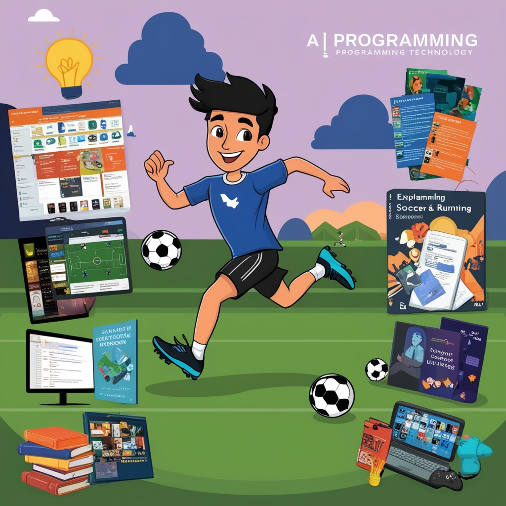

I am a passionate and curious individual with a strong interest in programming and technology. In my free time, I enjoy playing video games, soccer, and running, which help me stay active and focused. I also love exploring new topics, diving into the unknown, and expanding my knowledge through research. Watching series and movies is another way I unwind while staying inspired. My enthusiasm for programming drives me to constantly learn and improve my skills, always seeking new challenges and opportunities to grow.
